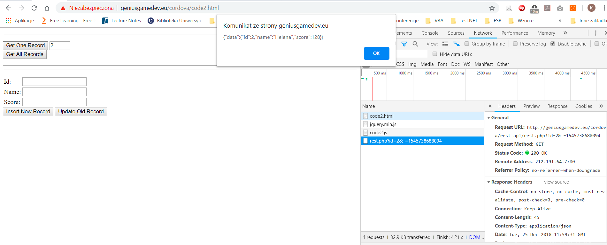

Genius
Now let us work on AJAX requests using jQuery. The AJAX is an abbreviation for Asynchronous Javascript And Xml. This technology allows to send (and receive) information from external sources via asynchronous queries. Usually the data send back and forth is in JSON (JavaScript Object Notation) form. In most of the situations webpages using javascript operations send queries to so called REST services.
Nowadays most of internet services provide so called REST services. This type of services allow us to invoke basic CRUD operations (Create, Read, Update, Delete). REST API usually allows 4 basic types of http queries GET, POST, PUT and DELETE on so called resources. These operations are usually connected with operations on the resources identified by url. For example GET is a Read or show the resource, POST and PUT are Create or Update the resource, meaning of DELETE is obvious. There is no canonical way for distinction of two operations POST and PUT (i.e. every API developer defines when POST or PUT should be used). I suggest to use POST as Create and PUT as Update.
Usually to build a REST client one needs a REST API - service that provides some set of REST operations. The server part can be created in most of server technologies starting with PHP, python, Java, ASP.Net, etc. In this tutorial we will use very simple API created in PHP that can receive and send simple data that contains user scores in a game.
Here we have sample documentation of our test API service:
| Get selected record | |
| URL | http://geniusgamedev.eu/cordova/rest_api/rest_srv/:id or http://geniusgamedev.eu/cordova/rest_api/rest.php?id=:id |
| Method | GET |
| Parameters | id - id of the record |
| Request Data | None |
| Response Data | record object: |
| {"data":{ "id":2, "name":"Helena", "score":128 } } | |
| Get all records | |
| URL | http://geniusgamedev.eu/cordova/rest_api/rest_srv or http://geniusgamedev.eu/cordova/rest_api/rest.php |
| Method | GET |
| Parameters | None |
| Request Data | None |
| Response Data | record object: |
| {"data":{ | |
| "1":{"id":1,"name":"Alan","score":35}, | |
| "2":{"id":2,"name":"Helena","score":128}, | |
| "3":{"id":3,"name":"Alex","score":162} | |
| } | |
| Add a new record | |
| URL | http://geniusgamedev.eu/cordova/rest_api/rest_srv or http://geniusgamedev.eu/cordova/rest_api/rest.php |
| Method | POST |
| Parameters | None |
| Request Data | new record object |
| { "data": { "id": 1, "name": "Jane", "score": 332 } } | |
| Response Data | record object: |
| {"data":{ "id":12, "name":"Jane", "score":332 } } | |
| the value id is a new value created by the service | |
| Update a record | |
| URL | http://geniusgamedev.eu/cordova/rest_api/rest_srv/:id or http://geniusgamedev.eu/cordova/rest_api/rest.php?id=:id |
| Method | PUT |
| Parameters | id - id of the record to update |
| Request Data | new record object |
| { "data": { "id": 1, "name": "Jane", "score": 332 } } | |
| Response Data | record object: |
| {"data":{ "id":3, "name":"Jane", "score":332 } } | |
| the value id is an id of updated record | |
| Delete selected record | |
| URL | http://geniusgamedev.eu/cordova/rest_api/rest_srv/:id or http://geniusgamedev.eu/cordova/rest_api/rest.php?id=:id |
| Method | DELETE |
| Parameters | None |
| Request Data | None |
| Response Data | record object: |
| {"data":{ | |
| "1":{"id":1,"name":"Alan","score":35}, | |
| "3":{"id":3,"name":"Alex","score":162} | |
| } | |
| the rest of records after erasing the requested element | |
In order to test first two of presented operations we can open in the browser one of these two addresses: http://geniusgamedev.eu/cordova/rest_api/rest_srv http://geniusgamedev.eu/cordova/rest_api/rest_srv/2. In order to test POST, PUT and DELETE we need either use soluctions like RestClient browser plugin (like Advanced REST client for Chrome) or write a special html/js code.
At first let us create base for our web rest client.
and starting js file
As we can see in html file we have a
Firs let us create a simple get query and show the result in alert window:
function getOneRecord(){
record_id = 1;
if ($('#rid').val()) {
record_id = $('#rid').val();
}
$.ajax({
method : "GET",
dataType: 'json',
url: "http://geniusgamedev.eu/cordova/rest_api/rest_srv/"+record_id,
cache: false
})
.done(function (resp) {
alert(JSON.stringify(resp));
})
.fail(function (msg){
alert(JSON.stringify(msg));
});
}When this code is inserted into code1.js and the code1.html is run in the browser, we observe that after clicking on the button "getOne_btn" in the return an alert window with the expected json appears. Changing the value in input field "rid" we change what record will be obtained from the server.

In the code w see an operation $.ajax - this is a shortcut for an AJAX query to the server. This operation has an event "done" that is fired when server respond without errors and "fail" whenever error occurs. Any js object can be turned into a json string using JSON.stringify(). Additionally we see that we are not interested in all properties of response object but only field data inside this object. In the code w see an operation $.ajax - this is a shortcut for an AJAX query to the server. This operation has an event "done" that is fired when server respond without errors and "fail" whenever error occurs. Any js object can be turned into a json string using JSON.stringify(). Additionally we see that we are not interested in all properties of response object but only field data inside this object.
Now as we know how to obtain an information from server we should work how to add this obtained record into table with results. For that we declare a new function add_record_to_table(record).
function getOneRecord(){
record_id = 1;
if ($('#rid').val()) {
record_id = $('#rid').val();
}
$.ajax({
method : "GET",
dataType: 'json',
url: "http://geniusgamedev.eu/cordova/rest_api/rest_srv/"+record_id,
cache: false
})
.done(function (response) {
add_record_to_table(response.data);
})
.fail(function (msg){
alert(JSON.stringify(msg));
});
}Now we have to create function add_record_to_table(). In that moment we should also think how we include into our design an operation to delete elements. It will be very nice if in every row of our table we will have a DELETE button that will designate record to erasure.
function add_record_to_table(data){
var table = $("#result_tbl");
var new_row = $("<tr/>");
var cell = $("<td/>");
cell.html(data.id);
cell.appendTo(new_row);
cell = $("<td/>");
cell.html(data.name);
cell.appendTo(new_row);
cell = $("<td/>");
cell.html(data.score);
cell.appendTo(new_row);
cell = $("<td/>");
var btn = $("<button/>");
btn.html("DELETE");
btn.appendTo(cell);
cell.appendTo(new_row);
new_row.appendTo(table);
btn.click(function (){
deleteRecord(data.id, new_row);
});
}
In order to add a new row in our table we create a new_row object and a cell for every parameter: 'id', 'name', 'score' separately, and a cell for delete button. We append each new cell to a new_row object. After that, we append the new_row object to existing table and bind a new anonymous function to created delete button. During erasure we will need id of a record to delete from server and the row to get rid off. In order to add a new row in our table we create a new_row object and a cell for every parameter: 'id', 'name', 'score' separately, and a cell for delete button. We append each new cell to a new_row object. After that, we append the new_row object to existing table and bind a new anonymous function to created delete button. During erasure we will need id of a record to delete from server and the row to get rid off.
The method deleteRecord can have the form:
function deleteRecord(record_id, row_to_delete){
$.ajax({
method : "DELETE",
dataType: 'json',
url: "http://geniusgamedev.eu/cordova/rest_api/rest_srv/"+record_id,
cache: false
})
.done(function (response) {
row_to_delete.remove();
})
.fail(function (msg){
alert(JSON.stringify(msg));
});
}
As we can see jQuery GET and DELETE operations have very similar form. The most important difference is the field 'method'. Additionally, if we want to remove element from our web page it is enough to invoke method .remove() on selected element. As we can see jQuery GET and DELETE operations have very similar form. The most important difference is the field 'method'. Additionally, if we want to remove element from our web page it is enough to invoke method .remove() on selected element.
We already know how to obtain one element via GET operation, the action to get All of them in one query is very straight forward:
function getAllRecords(){
$.ajax({
method : "GET",
dataType: 'json',
url: "http://geniusgamedev.eu/cordova/rest_api/rest_srv/",
cache: false
})
.done(function (response) {
var data = response.data;
for (let index in data){
add_record_to_table(data[index]);
}
})
.fail(function (msg){
alert(JSON.stringify(msg));
});
}
We are left only with two types of queries "POST" and "PUT", let us start with the first one.
function postRecord(){
var new_element = {};
new_element.id = $("#nid").val();
new_element.name = $("#name").val();
new_element.score = $("#score").val();
var data_to_send ={};
data_to_send.data = new_element;
$.ajax({
method : "POST",
dataType: 'json',
data: JSON.stringify(data_to_send),
url: "http://geniusgamedev.eu/cordova/rest_api/rest_srv/",
cache: false
})
.done(function (response) {
add_record_to_table(response.data);
})
.fail(function (msg){
alert(JSON.stringify(msg));
});
}
In the code above at the beginning we have to obtain elements from the form inputs. After that we send the data to server and add a new row from record obtained back. The only new element in this code is setting 'data' field of ajax query. In the code above at the beginning we have to obtain elements from the form inputs. After that we send the data to server and add a new row from record obtained back. The only new element in this code is setting 'data' field of ajax query.
The PUT ajax query is very similar to the ones we have already created. And the last piece of the code is an easy extension from previous elements. The final version of js file have the form:
Please try to make the web page work more efficiently, at the moment if you click 'Get All Records' twice in the table we have doubled every record. Additionally when downloading records one by one, the records in the table are not sorted by any means and can repeat. When asking of a non existing record we obtain error - as we do not check if reply from the server is not null. Please try to make the web page work more efficiently, at the moment if you click 'Get All Records' twice in the table we have doubled every record. Additionally when downloading records one by one, the records in the table are not sorted by any means and can repeat. When asking of a non existing record we obtain error - as we do not check if reply from the server is not null.
The php is not a part of this course, however we have used an exemplary REST server. In order to run appended scripts one have to install WWW server. This examples were tested on Apache server on linux machine and XAMPP installation on Windows 10. The server contains only two files: score.php - connected to database CRUD operations and rest.php - operates on http REST requests.
Additionally in order to make this examples run we have to add .htaccess file with the following content:
Copyright Genius.